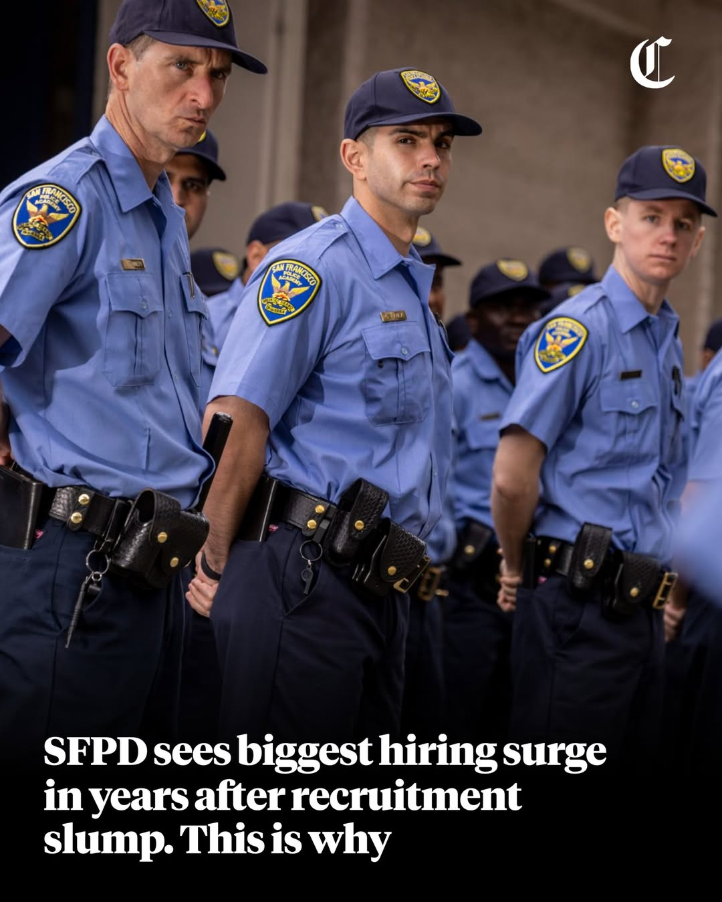
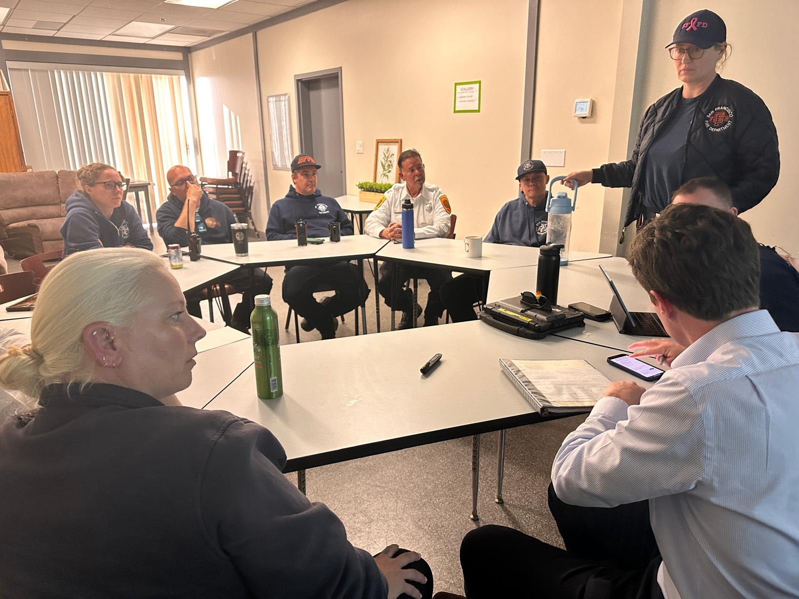

Maanasa Sivashankar (Mahn-sa)
Specialist in Service Design & Strategy
I identify the underlying organizational causes of customer issues and redesign operations, policies, and systems to fix them.
I lead the service design practice at the Mayor's Office of Innovation, where I shape strategy across the Mayor's highest-priority initiatives and have built service design into an organizational capability: setting team direction, defining hiring criteria, and growing the practice in partnership with the Director. Before MOI, I led service design and research for Fortune 100 clients including J.P. Morgan Private Bank, Johnson & Johnson, Penske, Meta, and Google, and worked in-house at The World Bank.
Selected Work
A small set of work that reflects how I think about people, systems, and the gaps between them.
Dashboard design and service improvements project
See case study
ASTRID is now the operational backbone of Mayor Lurie's Neighborhood Street Teams model.
See case study
Set the strategic direction for service redesign at key high-value customer touchpoints.
See case studyA data operations model that surfaced the structural gaps blocking Johnson & Johnson's Digital First transformation.
See case studyExhibitions
- Re-imagining BPL Community Services for People Experiencing Homelessness
- United for Housing: Reclaiming Local Cooperativism in Sunset Park
Publications
- Implementing Co-Design to Include Youth in Civic Projects
- Policy Analysis and Recommendations for Sustainable Housing
- Guidelines for Primary Health Care Infrastructure
Speaking
- Plain Language & Government Communications
- Community-Centered Design Practice
- San Francisco Civic Hackathon